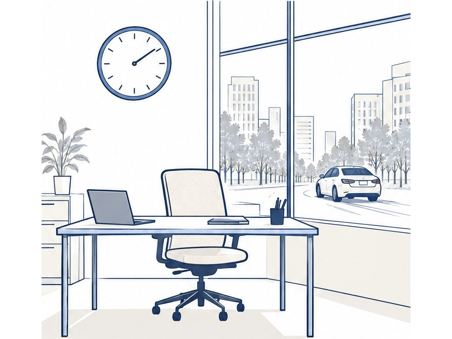
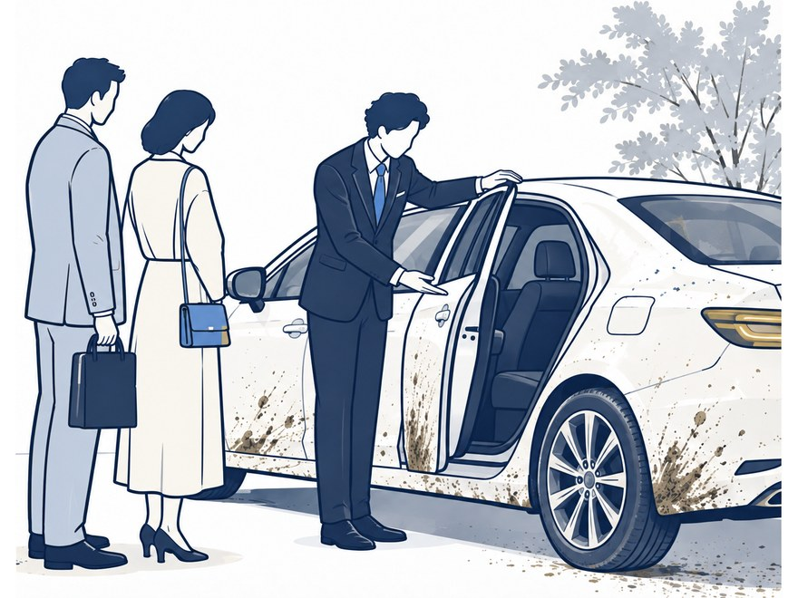
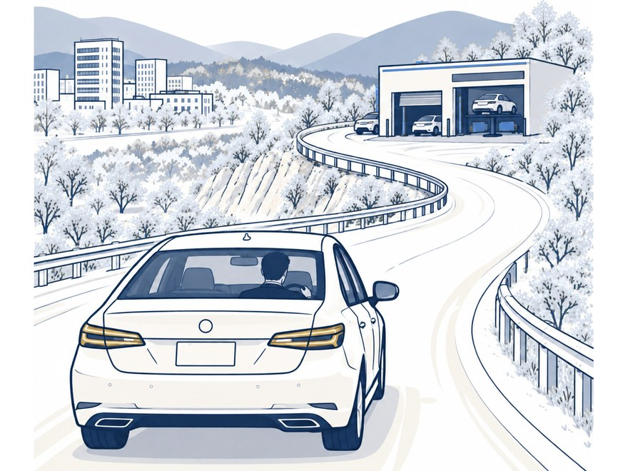
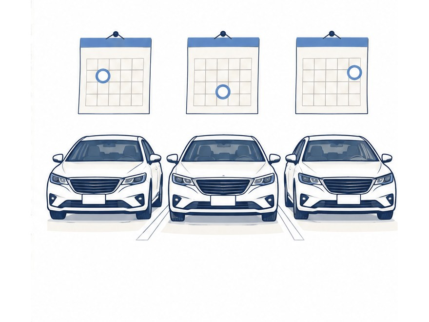

虎ノ門不動産様（港区）
社用車3台
頻度月1回・地下駐車場で1台ずつ料金23,700円／月〜（3台・月1回プラン・定価）
- きっかけ
- 社員が洗車に行くと、1時間以上戻ってこない
- 変わったこと
- 社員の方が洗車に行くことがなくなりました。2年以上ご利用中
社員が洗車に行く時間は、ゼロに。
台数と場所を送るだけ。2営業日以内にご返信します。
※口コミ件数・評価はくらしのマーケットの店舗全体の数字です。施工件数は自社実績です。
 BEFORE
BEFORE AFTER
AFTERFOR YOU

近くに洗車場がなく、社員の時間が消える

そのうち誰も洗車に行かなくなる

車を出す時間が取れない

把握しきれない
SERVICE

会社の駐車場で全台まとめて、またはお店の前で1台ずつ。水なし洗車なので電源・水道は不要。月極・マンション駐車場でも施工できます。

3月・6月・9月・12月に国家一級整備士がバッテリー・タイヤ・消耗品を点検。追加料金なし。消耗品の交換も駐車場でできます。

ドライブレコーダーやモニターの取付、車検（駐車場でお預かりし提携工場で実施）も、ご希望のときだけ承ります。リース車も可。
REPORT
どの車を、どこまで洗ったかが写真で分かります。

点検は年4回（3月・6月・9月・12月）。バッテリー・タイヤ・オイル・ワイパーの状態を、LINEのマイページでいつでも確認できます。画面は見本のデータです。

作業内容と写真をその日のうちにお送りします。車検の時期が近づいたらご連絡します。車検はご希望のときだけ承ります。いつもの工場に出していただいても構いません。画面は見本のデータです。
BEFORE / AFTER
社員1人が洗車に使う時間1回あたり・当社試算
90分→1分
洗車場への往復と待ち時間が、お車の鍵を預けるだけになります。
社用車3台・月1回なら
53時間／年
洗車にかかる労働時間を削減できます
※当社試算。洗車場への往復と洗車待ちで1回90分、月1回・3台・12ヶ月の場合（約53時間）。洗車場までの距離や混み具合で変わります。
CASE
実際にご利用いただいている2社と、はじめての会社様向けの形です。金額は定価で計算した目安です。
虎ノ門不動産様（港区）
社用車3台

フロンティアホーム様（品川区）
社用車2台
はじめての会社様
まず1台・1回
仕上がりとレポートを見てから、定期プランにするか決められます。台数分をまとめてお試しいただくこともできます。
まず1台、相談する※社名・車種・写真は、掲載のご了承をいただいた範囲で表記しています。料金は税込・出張費込みの定価で、実際のご利用金額ではありません。
MECHANIC
国家1級整備士の代表が、点検と施工の品質を管理します。

国家一級自動車整備士
吉永 明拓（ラクルマ代表）
ホンダディーラーに8年在籍したのち、2023年3月にラクルマを開業。出張整備を専業として累計1,000件以上を施工してまいりました。
洗車で伺うたびに車を見ているので、小さな変化に早く気づけます。施工は私または研修を受けたスタッフがお伺いし、点検と品質の管理は私が行います。
PLAN
全プランに室内清掃・年4回の点検・作業レポートが含まれます。同じ駐車場の複数台は、まとめて施工します。
金額は税込・出張費込みです。SUV（全長4.5m以上）・ミニバン・全長4.8m以上のセダンはSUV・ミニバンの料金です。区分の詳細は料金表をご覧ください。点検で見つかった整備や取付は、別途お見積りのうえご依頼いただけます。
まずは1台、1回だけ。
台数と場所を送るだけ。2営業日以内にご返信します。
FLOW
まずは1台、1回だけで大丈夫です。仕上がりとレポートをご確認ください。

社用車の台数と駐車場の場所をお知らせください。2営業日以内に、日程とお見積りをお送りします。

当日は鍵をお預かりするだけです。仕上がりと、写真つきのレポートをご確認ください。

ご満足いただけたら定期プランへ。台数・頻度は柔軟に調整できます。季節ごとの点検と、次回車検日のご案内が始まります。
CHECK
お車の鍵をお預かりするだけ。作業後は写真つきでご報告します。
水なし洗車のため、駐車場に設備がなくても施工できます。
会社の駐車場でも、借りている駐車場でも伺います。
そのほかの曜日で、貴社のご都合に合わせて日程を組みます。
FAQ
毎回、決めた曜日・決めた時間に伺います。駐車場がなくても、お店の前に1台ずつ出していただければ作業できます。1台ずつ順に作業しますので、全台を一度に空けていただく必要はありません。洗車・室内清掃・点検まで1台約80分、立ち会いは不要です。全台が出払う日は、日程を前後に動かします。
はい。日常のきれいさと状態のチェックは、リース車でもこちらで承れます。
水なし洗車のため、電源・水道は不要です。月極・マンションの駐車場でも施工できます。
対応しております。御社宛てに請求書を発行いたします（弊社は課税事業者です）。締め日・お支払い方法はご相談ください。
はい。ご希望のときだけで構いません。いつもの工場に出していただいても大丈夫です。ご依頼の場合は駐車場で鍵とお車をお預かりし、国家一級整備士が提携工場で車検を終えてお戻しします。台ごとの車検日はこちらで把握し、時期が近づいたらご連絡します。車種によってお受けできない場合があるため、車検証の写真でご確認ください。詳しくは出張車検のページをご覧ください。
定期プランの台数・頻度は、そのつど調整できます。まずは現在の台数でお知らせください。
世田谷区・目黒区・渋谷区を中心に、港区・品川区にも伺っています。エリア外の会社様も、まずはご相談ください。
社用車の台数と駐車場の場所をお知らせください。
2営業日以内に、日程とお見積りをご返信します。
フォームからも送れます
お見積りのご依頼
入力は1分。お見積りだけでも構いません。営業のお電話はいたしません。
対応エリア：世田谷区・目黒区・渋谷区、港区・品川区。エリア外もご相談ください。